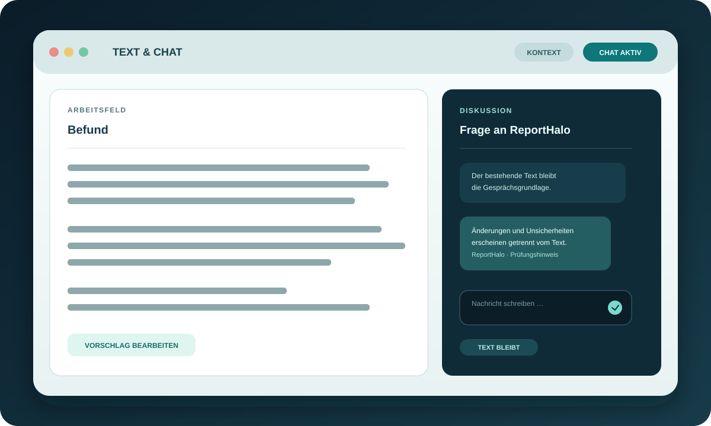

Das Feld bleibt führend
Ein explizit aktiviertes Fremdfeld bleibt die maßgebliche Arbeitsfläche. Ohne Ziel wird nichts automatisch geschrieben.
RadIMO · Windows companion
ReportHalo bleibt neben dem aktiven RIS-, Word- oder Editor-Feld. Der Fremdeditor bleibt die Quelle; Kontext, Lektorat und Beurteilung werden dort bewusst weitergeführt.
ReportHalo ist nicht als Medizinprodukt zertifiziert. Ergebnisse sind Entwürfe und müssen vor jeder Übernahme anhand der Originaldaten fachlich geprüft werden. Die Demo-Seite enthält keine Patientendaten.
Produktidee
ReportHalo ist bewusst kein zweites großes Dokumentfenster. Der Minihelfer bündelt die häufigsten Schritte in einem ruhigen 3×3-Kern und öffnet weitere Flächen nur dann, wenn sie gebraucht werden.
Ein explizit aktiviertes Fremdfeld bleibt die maßgebliche Arbeitsfläche. Ohne Ziel wird nichts automatisch geschrieben.
Text und Chat werden als verbundener Arbeitsbereich geöffnet. Vorschläge bleiben editierbar und getrennt von Hinweisen.
Identität und Ausgangstext werden vor dem Schreiben erneut geprüft. Beurteilungen werden ergänzt, nicht ersetzt.

Die Arbeitsfläche
Der Orb zieht am mittleren Kern mit, bleibt am Rand transparent und zeigt im geschlossenen Zustand fast keinen Text. Rechtsklick öffnet das lokale Schnellmenü für Einstellungen, Prompts, Sichtbarkeit und Beenden.
Text & Chat
Der gemeinsame Arbeitsbereich dockt als verbundener Block an den Orb. Links bleibt der Text editierbar, rechts läuft die ausführliche Diskussion. Erfasster Feldtext ist automatisch Kontext; ein Kopierschritt ist nicht nötig.
Chat ist die einzige ausführliche Oberfläche. Kurze Änderungs- und Prüfhinweise bleiben vom übertragbaren Text getrennt.

Der Ablauf
Der Workflow hält die Verantwortung dort, wo sie hingehört: beim Menschen und im Originalfeld.
Cursor im editierbaren Fremdfeld setzen und den Target-Kern aktivieren. Fenster-, Control- und Textidentität werden gespeichert.
Lektorat, Struktur/Complete und Beurteilung arbeiten mit dem vorhandenen Text. Medizinische oder logische Auffälligkeiten werden als Hinweis gezeigt, nicht still verändert.
Direktes Schreiben ist eine explizite Aktion. Alternativ öffnet der Vorschlag zuerst im Editor, damit er manuell angepasst und anschließend geprüft werden kann.
Zwei Laufzeitwege
Beide Varianten nutzen dieselbe Mini-Oberfläche und dieselben medizinischen Schutzregeln.
Codex subscription path
Der Desktop-Client verwendet eine offizielle lokale Codex-Installation. Fehlt sie, kann der festgelegte Installer nachinstalliert werden; der Codex-Payload wird nicht in ReportHalo eingebettet.
RadIMO-ReportHalo.exe
Direct Responses API
Die API-Variante bleibt ohne Codex-Adapter und unterstützt OpenAI sowie Azure OpenAI mit verschlüsselten Zugangsdaten, Streaming und lokalen Budgetgrenzen.
RadIMO-ReportHalo API.exe
Grenzen und Nachvollziehbarkeit
Der Originaltext bleibt unterscheidbar vom Vorschlag. Zahlen, Einheiten, Seitenangaben, Negationen, Unsicherheit, zeitliche Angaben und Empfehlungshinweise werden vor der Übernahme geschützt. Bei einem veränderten Zielfeld wird der Schreibvorgang abgebrochen.
Technische Dokumentation lesenEnglish summary
RadIMO – ReportHalo is a Windows Floating Orb that stays beside the active RIS, Word, or editor field. It keeps the foreign editor authoritative, brings text and chat together when needed, and requires an explicit, identity-checked transfer. The repository contains a Codex subscription build, a direct OpenAI/Azure API build, the installer helper, and the release contract.